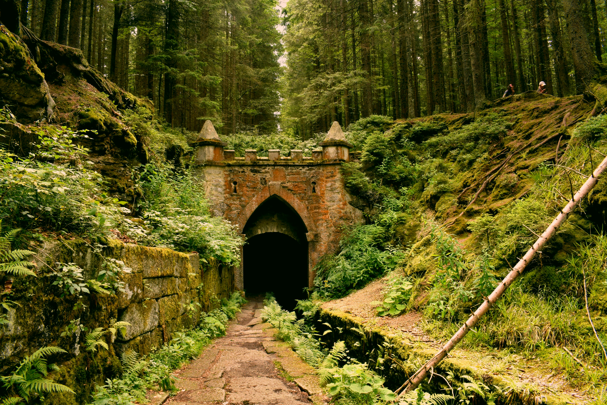

You are a knight that was transported from your current timeline, back 200 years into a war that your great, great grandmother fought in. She has no knowledge of who you are but you must fight alongside her in order for your kingdom to win this war.
The forest sprite kindly leads you through the underground until you can get through the end of the tunnel. As a reward you offer him small lumps of cheese and meat. Once you are through, a wyvern offers to take you to your home country in exchange for 20 gold pieces.

Lie, accept the offer saying you can afford the passage. Tell the truth, politely decline and keep walking.